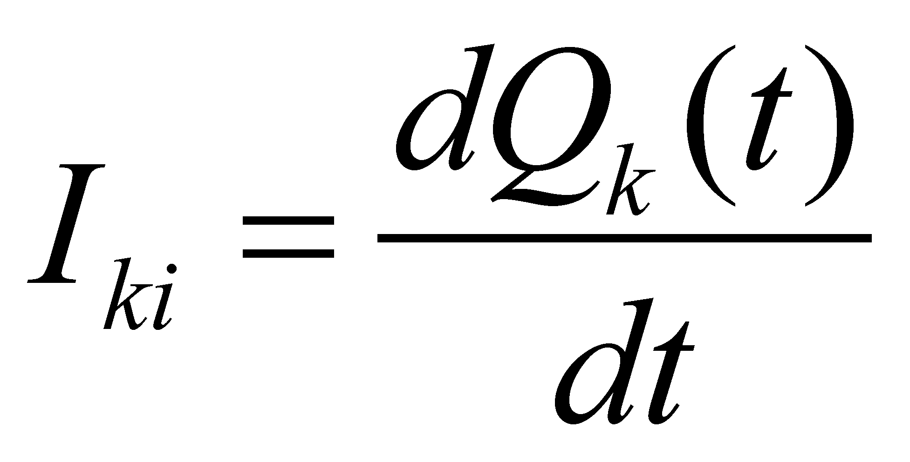
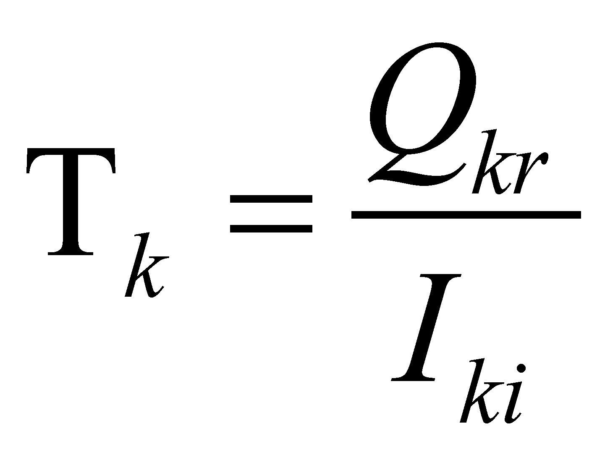

|
|
|
As we have noticed in chapter 7, if Qkr is the model stockpile of the k-type flux of a MS, and the real k-type flux stockpile of MS at a moment t is , then, the difference:
(X.16.1)
is the k-type flux demand (necessary amount) of MS at the moment t if is negative, and the k-type flux surplus if is positive. Under such circumstances, if:
 (X.16.2)
is the temporal density (rate, intensity) of the internal consumption of the same flux type, the typical (by model) life span of the MS, relative at the k-type flux, in the absence of an external supply flux, shall be:
 (X.16.3)
According to the real k-type flux stockpile, at the same intensity of the internal consumption rate Iki, the real life span of MS relative at this flux type (in the absence of the k-type supply flux) shall be:
(X.16.4)
resulting that the life span of a MS can be less or major than the model duration given by the relation X.16.3, depending on the state of the internal flux stockpile.
Fig. X.16.1
The figure X.16.1 shows the evolution in time of the stockpile Qk(t) of a MS, where the horizontal dotted straight line represents the model stockpile Qkr. Let us presume that we are studying the stock evolution starting from the moment t0, when the stock Qk(t) is equal with Qkr. In the interval , in the absence of an external k-attribute influx, a decrease of the internal stockpile occurs (caused by the consumption or by the losses through emergent fluxes). If the absence of the external supply flux would carry on, and the internal consumption would be maintained at the same rate:
(X.16.5)
then, at the moment tf , the internal k-type flux stockpile is vanished and the MS’s life span expires.
Comment X.16.1: If MS is an individual biosystem, and the k-type flux is a vital internal flux (oxygen flux, water, proteins etc.) and when the internal stock expires, the system dies; if MS is a social biosystem in the same situation, all the system’s elements die as well. In case of the state systems, the crisis and the economic failure occur. Under such circumstances, and for extending the life span, a drastic decrease of the consumption rate is required (the so-called “consumption rationalization” in the periods of economic crisis, under siege, embargo etc. or the hibernation state of the individual biosystems during the periods without food resources). However, the situation is identical for the abiotic MS as well, for instance the case of the free neutrons (neutrons which are expelled from their usual environment - the nuclear medium. A neutron has a certain rate of internal energy consumption, rate which is usually provided entirely from their neighbors from the nuclear medium (by means of mutual supply). Once it is outside the nucleus, at the same consumption rate and in the absence of their nuclear partners, its internal energy stockpile is enough for only about 10 minutes, after which the neutron is dismembered into its elements (a proton and an electron), elements which are able “to survive” also in the extra-nuclear medium. For ensuring a much longer life span, it is enough that the neutron to be associated with a single proton (making-up a deuterium nucleus).
Fortunately, in case of the system displayed in the figure X.16.1, a supply flux occurs which, within the interval , increases the internal flux stockpile over the value Qkr (a temporary flux surplus occurs). In this way, by means of continuous or periodical supplies, the relative life span at the k-type flux of a MS can be endlessly extended, if other processes which may cause its destruction do not interfere.
Comment X.16.2: The same situation can be found at the unstable particles which are artificially accelerated. No matter what acceleration method would be chosen, the essence of this process consists in an energy input from the outside for the set of the particles from the accelerator. In chapter 7, we have seen that a kinetic energy input supplied to a free MS generates its acceleration. Consequently, in case of the particles, either they are stable or unstable, the acceleration means an energy input provided to the entire particles’ internal structure, input which generates not only the acceleration but also the prolongation of the life time of an unstable MS. It is true that the energy input given by the accelerator is low as compared to the internal consumption demand of an unstable particle, but it is enough for explaining the extension of the particle’s life time with the fraction which currently is motivated through “the time expansion”.
Next, we shall briefly discuss about the life time of the material systems as complex objects. If the objects from the structure of a complex object are always the same (they have the same life span as the complex object), we may say that the complex object is also invariant throughout its entire life time. But, if these elements have a shorter life time than the life span of the complex object, and if they can be replaced, then, they will be always different ones. In this case, it cannot be said that the object is basically the same: the structure (configuration, shape, spatial distribution) is, but the elements of this structure are not. The temporal interval which is necessary for changing all the elements from the composition of a complex object with new ones shall be named maximum regeneration interval (duration) (recovery, renewal, recycling interval) .
For example, the human body has a specific , interval in which most of the old cells are replaced by new ones (except the neurons and the cells of the cardiac muscle, which are considered as non-renewable). The maximum regeneration duration of the earth crust may be estimated based on the oldest rocks which have been found (about 4.5 billion years). During this interval, any part from the Earth crust will be melted (as a result of subduction), being replaced by new rocks, occurred by solidification of the lava generated by the surface or under sea volcanoes. But, the duration of the Earth crust is not the same with the duration of the Earth’s life time, the latter being much more longer than the life span of any crust part (according to the objectual philosophy, the age of the Earth and of the entire Universe is considered to be much older than the one which is currently estimated).
The same situation is found at the social objects (family, clans, companies, associations etc.), whose internal structure may be preserved on very long periods of time, but the abstract containers from their structure (positions) shall be occupied by other persons. There is also a for this kind of objects, according to whom the entire structure population is completely different.
Copyright © 2006-2011 Aurel Rusu. All rights reserved.